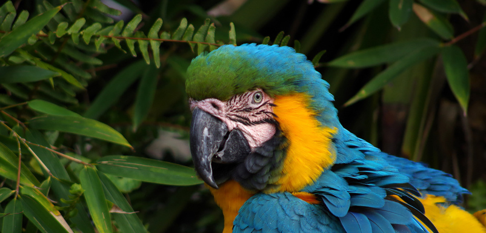

Arara-azul-amarela
A arara-azul-amarela é uma ave da América do Sul muito conhecida por suas cores vibrantes. Vive em florestas tropicais e é uma das aves mais inteligentes. Infelizmente, está ameaçada devido à destruição de habitat e ao tráfico de animais.

